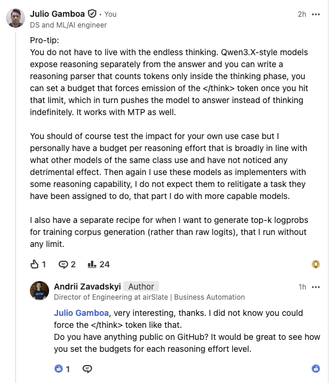

A reasoning model can have enough tokens to answer a question and still take far too long to answer it. It may simply be allowed to spend nearly the whole response thinking.
Qwen3-family models usually put reasoning between <think> and </think> before producing the visible answer. That gives the server a useful control point. I can limit how long the model thinks without applying the same limit to its final answer.
Completion limits are not thinking limits
Suppose a request allows 1,024 completion tokens. That ceiling applies to the whole completion. It does not stop a reasoning model from using most of those tokens inside <think>. The answer may arrive late, be truncated, or never get enough room.
The toolkit's vLLM adapter sets request.thinking_token_budget. The V1 sampler counts tokens while generation is inside the reasoning phase. When the budget is reached, it forces </think> and lets the model continue with its answer. The model can always stop thinking earlier.
| Requested effort | Action-seat budget |
|---|---|
| none | 0 tokens |
| minimal | 128 tokens |
| low | 256 tokens |
| medium | 384 tokens |
| high / max | 512 tokens |
The request can pass reasoning_effort or an explicit token budget. Explicit budgets are clamped to the selected profile's ceiling. I keep a separate corpus profile with larger budgets for collecting reasoning traces. Those are not sensible defaults for an interactive action seat.
This is a latency and verbosity control, not a quality guarantee. Some tasks benefit from more deliberation, so the limits need testing against the work the model is actually doing.
Making the useful parts public
After I described this approach online, Andrii Zavadskyi asked whether I could publish the parser and the effort levels. I obliged and made some of it public.

The repository contains:
- a pure-Python budget policy that can be tested without vLLM, CUDA, or a GPU;
- a vLLM parser adapter registered as
qwen3_budgeted; - action and corpus profiles, with request-level overrides and ceilings;
- a conservative
modelctlhelper for systemd user services; - request, service, and alias examples; and
- notes on thinking budgets and the several different things people call a cache.
The Qwen3.8 SGLang/DFlash2 route is separate. It uses the runtime's strict-thinking support and a global maximum-thinking setting rather than the vLLM plugin.
Precision creates another problem
Long thinking runs are one source of malformed or truncated outputs. Quantisation is another. This matters if the model has to fit on a 24GB card.
A TechDeveloper report on running Qwen3.8-27B on a single RTX 4090 compared four precision levels on the same hardware and agentic tasks. These are the author's measurements, not mine:
| Precision | Weights only | 24GB card with 32k context? | Malformed calls / 20 |
|---|---|---|---|
| BF16 | ~52 GiB | No | 0 |
| Q6_K | ~22–23 GiB | Barely, no headroom | 1 |
| Q5_K_M | ~19 GiB | Yes | 2 |
| Q4_K_M | ~16–17 GiB | Yes, comfortably | 5 |
This is easy to miss in benchmark summaries. A failed problem may not mean that the model could not solve it. The model may have used the context on its thinking phase, truncated the answer, or emitted a malformed tool call. Those failures are still real when the model occupies an agent seat, but they point to serving and output-control problems rather than one undifferentiated measure of capability.
The toolkit's current examples do not tackle BF16 serving. That is something I intend to address next, but a roughly 52 GiB weights-only footprint makes BF16 a non-starter on 24GB unified memory. If Q5, Q4, or a similar quant is required, malformed calls need to be detected and managed rather than ignored as benchmark noise.
Throughput is a different serving issue
Thinking budgets do not solve every performance problem. In a separate discussion, someone was trying to get about 30 visible tokens per second from Qwen3.8-27B on a DGX Spark. I reported 33.1 tokens per second median with normal thinking and 31.9 with thinking disabled. Across the end-to-end workflow, including tool calls, turns, and reasoning, the median was 33.6.
This tells us about that model, runtime, hardware, and workload. It does not tell us which thinking budget is best, nor does a thinking budget turn a slow runtime into a fast one.
Cache clearing should be boring
A local model server can hold loaded weights, attention KV, reusable prompt prefixes, recurrent state, CUDA graphs, and compiled kernels. Calling all of this “the cache” hides important differences.
The example modelctl clear-cache command first checks that the expected model owns the endpoint. It reads the runtime metrics and refuses to continue if requests are running or queued. It then restarts the service and waits for the same model to become ready.
It does not pretend that vLLM and SGLang share a universal cache-flush endpoint. It also does not reset a shared service while another client is using it.
What this is for
The toolkit is for people already serving Qwen3-family models who want direct control over reasoning length and a few conservative service operations. It is most useful for interactive assistants, tool-using agents, and multi-model systems where a local model has a defined job and latency budget.
What I am contributing here is not a giant serving framework. It is a small collection of behaviour that I wanted to reuse: separate thinking from answering, expose the distinction as policy, test the policy without a GPU, and refuse unsafe service resets.
The vLLM adapter uses extension APIs that should be version-pinned and smoke-tested. The effort levels are defaults, not universal constants. The repository contains no model weights.
All em dashes were generated by me and used liberally wherever I saw fit.